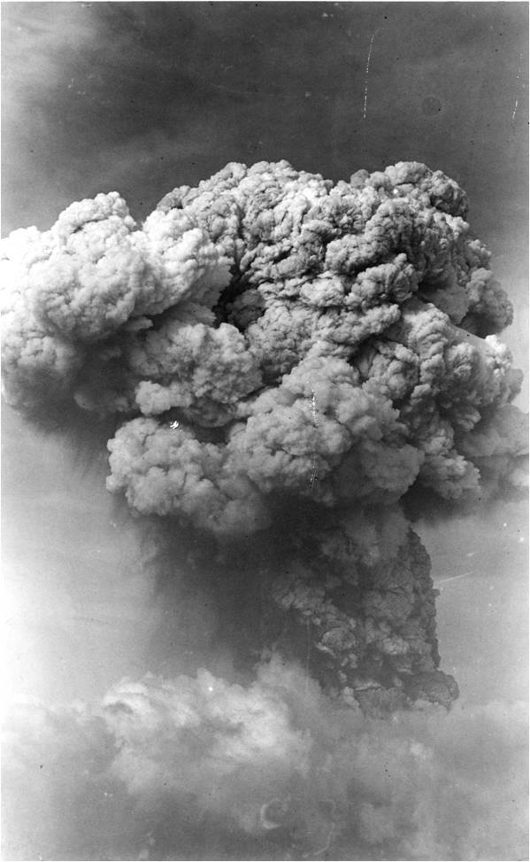
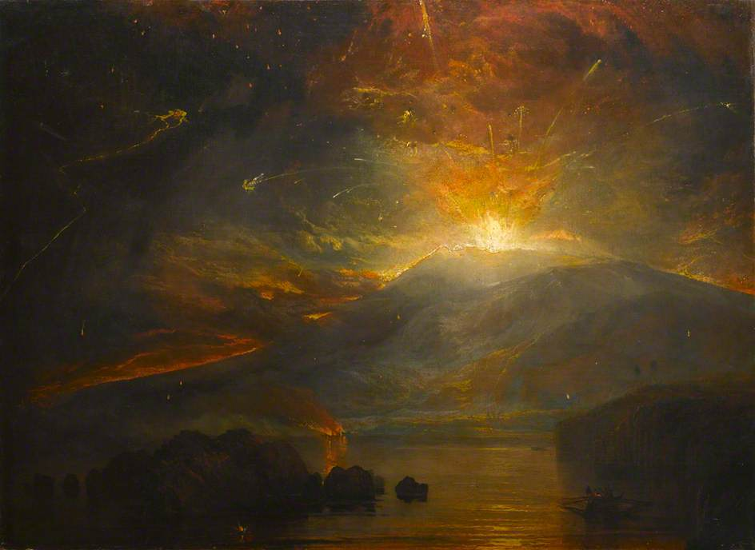
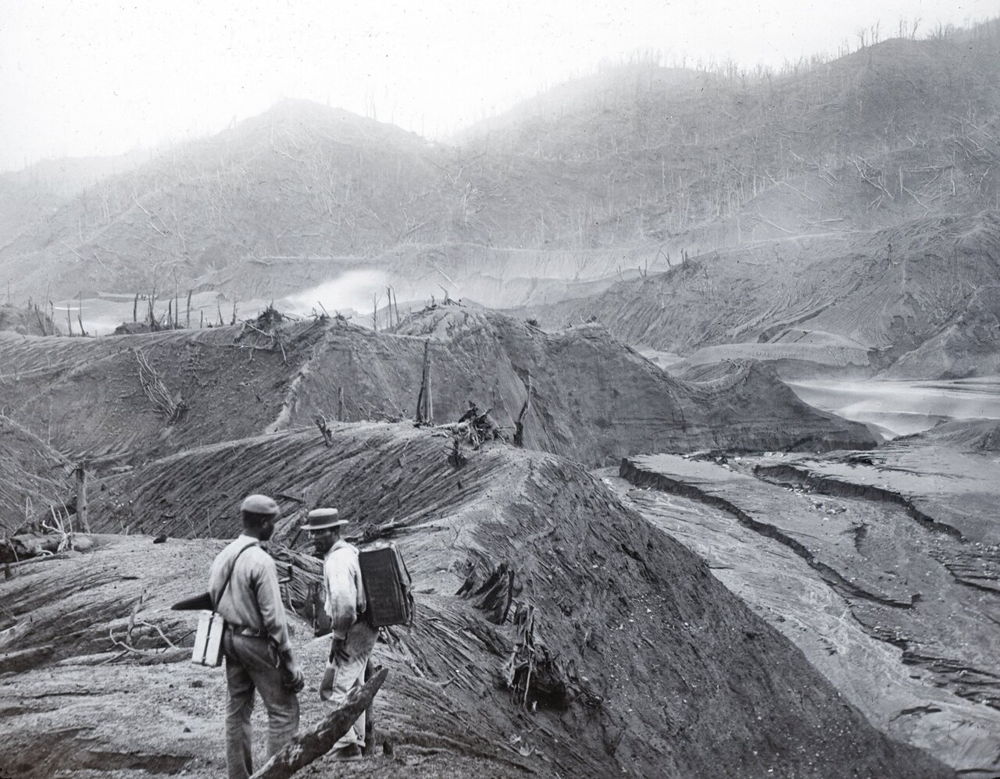
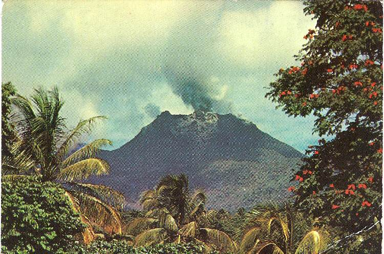

La Soufrière or Soufrière Saint Vincent is an active stratovolcano on the Caribbean island of Saint Vincent in Saint Vicnent and the Grenadines.
It is the highest peak on the island of Saint Vincent.
Based on research La Soufrière has erupted five times in the years 1718, 1812, 1902, 1997 and 2021.
The first recorded explosive eruption occured on March 26th, 1718. According to an article posted on July 5th 1718, by the English write Daniel Defoe. An account of the eruption was relayed to him by sailors who were within the vicinity of the island. The sailors used description such as, "that terrible flash of fire".. "clashes of thunder".. "ash thick as smoke, fine as dust and solid as sand". Many of the ships within the region also recorded between 9 inches and 1 foot thick ash fall onboard. Ash fall was also in the neighbouring islands of Martinique, St. Lucia and Barbados with as much as 4 inches of ash reported as far north as St. Kitts and Nevis.
The Volcano's second recorded explosive eruption began on 29th April 1812, 94 years after the 1718 eruption. Red hot sparks were projected into the atmosphere and a massive cloud of thick black smoke erupted from the volcano, the eruption was described as 'very violent'. The eruption caused major destruction on the estates near the volcano, completely dried up two river systems and damaged plantations all over the island. Around 60-80 individuals were killed and many more were injured as a result of the disaster. Around 10 inches of ash and fragments of lava were recorded on the ground, as well as ash reaching the neighbouring islands. The island was in complete darkness the next morning, with a thick cloud of smoke hanging over the sea and sky. Over 200 earthquakes were registered in the months leading up to the 1812 eruption, and the eruption was one instance within a wave of massive seismic and tectonic disruption that swept the globe. The British parliament retained written records, but one of the most renowned recording was in the shape of a painting by J.M.W. Turner. In 1814, almost 2 years after the 29th April, 1812 eruption, a modest eruption occurred ejecting rocks and pumice half a kilometre from the crater. Then, in 1880, the water in the crater began to rise in temperature which resulted in scorching the vegetation that surrounded the crater.
The third recorded explosive eruption of the volcano occurred on May 7th, 1902, 90 years after the events of the 1812 eruption. The 1902 eruption is known as the most destructive eruption. The eruption claimed the lives of around 1,680 individuals, making it the 19th deadliest volcanic explosion in the human history. Despite the fact that volcanic activity lasted into 1903, a notable feature of the eruption was the descent of the huge black cloud and pyroclastic flow that occurred on May 7th. The village of Chateaubelair and Richmond were wiped out by a thick clould of ash, rock, heat and sulphuric fumes when they were rebuilding following the effects of the 1898 hurricane. Fancy, Orange Hill, Owia, Sandy Bay, Tourama, Georgetown and Langley Park were all severely devastated, with many people losing their lives. Much of the island's biodiversity. including much of the island's native forest, was also destroyed by the 1902 eruption. As a result, the island is thought to contain few or no indigenous trees to this day. Following these events, the volcano was dormant for another 68 years.
On Good Friday, April 13th, 1979 the fourth eruption of La Soufrière began. It was a Vulcanian eruption generating incandescent fragments of fresh viscous lava, steam and tephra from the volcano. This was projected into the sky at a height of roughly 12 miles, resulting in significant ash fall in the neighbouring islands. Although, no human lives were lost as a result of this eruption, more than 20,000 were forced to flee to the south of the island. Only 63 evacuation centres were earmarked for these individuals, resulting in hygienic difficulties with these centres but prompt scientific monitoring and a rapid goverment evacuation response. This was immediately rectified, and many lives were saved as a result.
